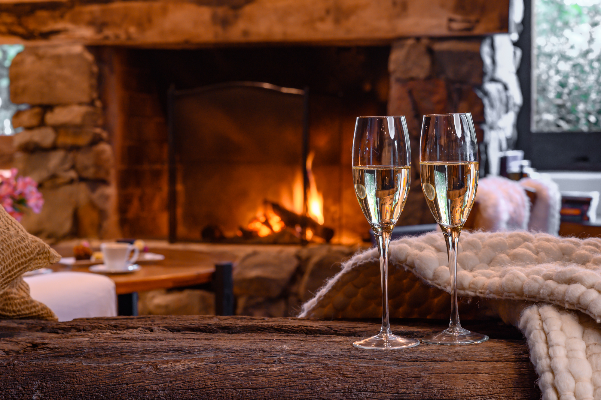
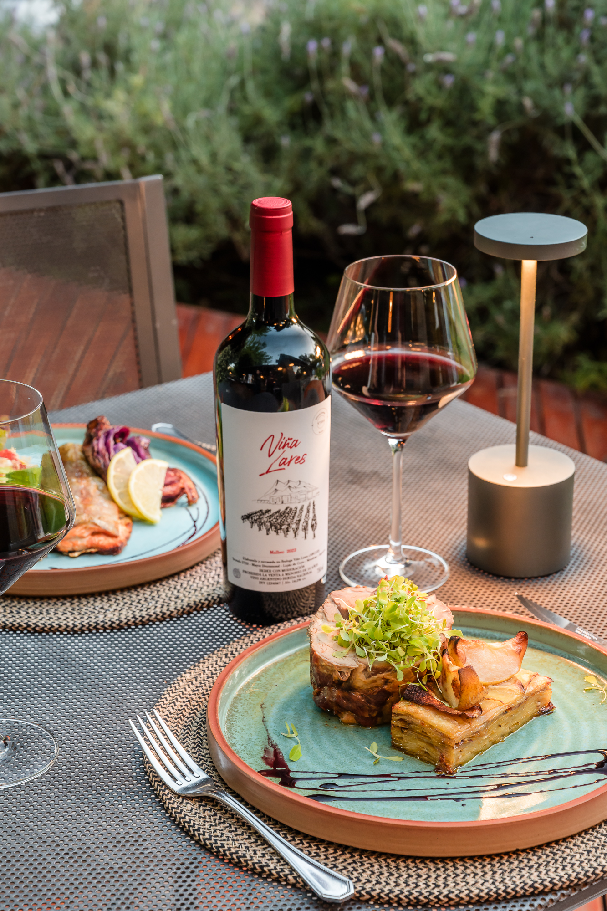

Sí. Viña Lares es nuestra bodega garage, ubicada a solo ocho kilómetros del hotel en Luján de Cuyo. Elabora vinos en partidas limitadas con Malbec de viñedo propio y uvas de pequeños productores de la zona.
CAVA Y VINOS
Lares de Chacras es un hotel con bodega en Mendoza. Nuestro vino se elabora en Viña Lares, la bodega propia del hotel en Luján de Cuyo, y la cava reúne una selección de etiquetas para acompañar cada día de la estadía.


LA CAVA
La cava acompaña la vida del hotel y reúne una selección de etiquetas para descubrir y disfrutar durante la estadía.
VIÑA LARES · LUJÁN DE CUYO
Nuestra bodega propia es una bodega garage, a solo 8 km del hotel. Cada vino se elabora a mano, con el Malbec de un viñedo propio de 1.500 m² y uvas que compramos a pequeños productores.
Desde 2022, la etiqueta y la contraetiqueta van en una sola pieza para usar la mitad de papel, y el viñedo se riega por goteo.



CADA TARDE, EN EL HOTEL
Una copa de Viña Lares para hacer una pausa en el día, probar nuestro vino y compartir un momento en Lares.

LARES RESTÓ
Lares Restó abre para cenas, para los huéspedes y para quienes llegan de afuera. Pan casero, pastas hechas en casa y productos de la región. Una mesa tranquila, buen vino y tiempo para disfrutarla.
CAMINOS DEL VINO
Chacras de Coria es la base ideal para recorrer la Primera Zona vitivinícola de Mendoza. Desde el hotel, los callejones arbolados y los caminos rurales conducen en pocos minutos a los viñedos y bodegas más prestigiosas de la región.

FAQS
RESERVAS DIRECTAS